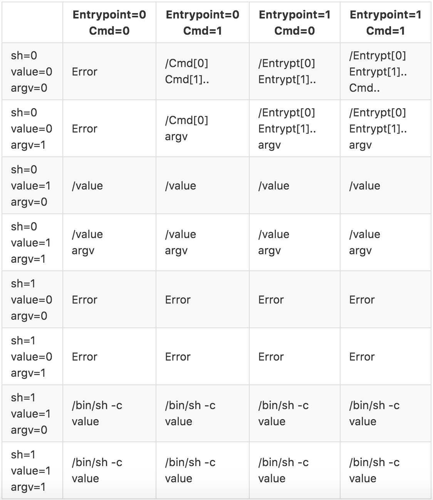

Mesos Containerizer
MesosContainerizer使用特定于Linux的功能（如控制cgroup和命名空间）提供轻量级容器化和executors的资源隔离。它是可组合的，因此开发人员可以选择性地启用不同的隔离器。它还为POSIX系统（例如OSX）提供基本支持，但没有任何实际隔离，仅提供资源使用报告。
共享文件系统
可以选择在Linux主机上使用SharedFilesystem隔离器，以允许修改每个容器针对共享文件系统的视图。这些修改信息通过框架或使用Agent参数--default_container_info，在ExecutorInfo中的ContainerInfo里指定。
ContainerInfo中指定的卷以读写（RW）或只读（RO）方式将共享文件系统（host_path）的部分映射到容器的文件系统（container_path）中。host_path可以是绝对路径，在这种情况下，它将使以host_path为根目录的文件系统子树也可以在每个容器的container_path下访问。如果host_path是相对路径，则它被认为是相对于executor的工作目录。目录将被创建，并从共享文件系统中的相应目录（必须存在）中复制权限。
SharedFilesystem隔离器的主要目的是使共享文件系统能够选择性地的为每个容器分配部分私有资源。例如，可以使用host_path ="tmp"和container_path ="/ tmp"来实现私有的“/tmp”目录，其将在执行器的工作目录（模式1777）内创建目录“tmp”，并同时将其在容器内安装为/tmp。
Pid Namespace
Pid命名空间隔离器可用于将每个容器隔离到单独pid命名空间中，具有两个主要优点：
可见性：在容器（执行器及其子进程）中运行的进程无法查看或向命名空间外的进程发信号。
优雅的终止：在pid命名空间中终止引导进程内核会确保终止命名空间中的所有其他进程。
Launcher将在销毁容器期间会优先使用上述（2）而不是 freezer cgroup，以避免在OOM条件下出现与 freezer cgroup相关的已知内核问题。
/proc将被用于容器挂载，所以诸如'ps'之类的工具将正常工作。
Posix Disk Isolator
Posix Disk隔离器提供了基本的磁盘隔离。它能够报告每个沙箱的磁盘使用情况，并且可以强制实施磁盘配额。它可以在Linux和OS X上使用。
要启用Posix Disk隔离器，在启动Agent时将disk/du附加到--isolation参数。
默认情况下，禁用强制磁盘配额。要启用该功能，请在启动Agent时指定--enforce_container_disk_quota参数。
Posix Disk隔离器通过定期运行du命令来报告每个沙箱的磁盘使用情况。可以从资源统计管理接口（/monitor/statistics）检索磁盘使用情况。
两个du命令之间的间隔可以通过Agent参数--container_disk_watch_interval进行控制。例如，--container_disk_watch_interval = 1mins将间隔设置为1分钟。默认间隔为15秒。
XFS Disk Isolator
XFS Disk隔离器使用XFS项目配额来跟踪每个容器沙箱使用的磁盘空间，并强制执行相应的磁盘空间分配。超过其磁盘分配的任务执行的写操作将失败，并出现EDQUOT错误。但是任务不会被容器化器终止。
XFS磁盘隔离器在功能上类似于Posix磁盘隔离器，但是避免了重复运行du的成本。虽然它们不会相互干扰，但不建议一起使用它们。
要启用XFS Disk隔离器，在启动Agent时将disk/xfs附加到--isolation参数。
XFS Disk隔离器需要沙箱目录位于使用pquota选项挂载的XFS文件系统上。没有必要配置projects或projid文件。赋予--xfs_project_range的project ID范围不得与为其他用途分配的任何project ID重叠。
XFS磁盘隔离器本身不支持类似Posix Disk隔离器的accounting-only模式。可以通过使用pqnoenforce选项挂载文件系统来禁用强制配额。
xfs_quota命令可用于显示当前project ID和配额的分配。例如：
xfs_quota -x -c "report -a -n -L 5000 -U 1000"要显示文件属于哪个project，请使用xfs_io命令显示fsxattr.projid字段。例如：
xfs_io -r -c stat /mnt/mesos/注意，Posix Disk隔离器参数--enforce_container_disk_quota，--container_disk_watch_interval和--enforce_container_disk_quota不适用于XFS Disk隔离器。
Docker Runtime Isolator
Docker Runtime隔离器为docker镜像的运行时配置（例如，Entrypoint/Cmd，Env等）提供支持。这个隔离器与--image_providers = docker绑定。如果--image_providers包含docker，则必须使用此隔离器。否则，Agent将拒绝启动。
要启用Docker Runtime隔离器，在启动Agent时将docker/runtime附加到--isolation参数。
目前，Docker运行时隔离器支持对docker镜像默认的Entrypoint，Cmd，Env和WorkingDir指令进行配置。用户可以使用CommandInfo来覆盖镜像中的默认Entrypoint和Cmd（有关详细信息，请参见下文）。CommandInfo应该位于TaskInfo或ExecutorInfo内部（取决于任务是command task还是custom executor）。
如果用户在CommandInfo中指定了一个命令，该命令将覆盖docker镜像中的默认Entrypoint/Cmd。否则，将使用默认Entrypoint/Cmd并为其附加CommandInfo中指定的参数。详细信息如下表所示。
用户可以在CommandInfo中指定shell，value和arguments，它们表示在下表的第一列中。0表示未指定，1表示指定。第一行表示Entrypoint和Cmd如何在docker镜像中定义。列表中除了第一行和第一列以及标识为Error的单元格，其它的格子内第一个元素为可执行命令，其余的为附加的参数。

The cgroups/net_cls Isolator
cgroups/net_cls隔离器允许用户为Mesos集群中的容器提供网络性能隔离和网络分段。要启用cgroups/net_cls isolator，在启动Agent时将cgroups/net_cls附加到--isolation参数。
顾名思义，该隔离器为Linux cgroups启用net_cls子系统，并为MesosContainerizer启动的每个容器分配一个net_cls cgroup。net_cls子系统的目标是允许内核使用32位句柄标记来自容器的数据包。这些句柄可以由诸如qdisc（用于流量工程）和net-filter（用于防火墙）的内核模块使用，以实施用户指定的网络性能和安全策略。基于net_cls句柄的策略可以由用户通过用户空间的工具（如tc和iptables）指定。
The 32-bit handle associated with a net_cls cgroup can be specified by writing the handle to the net_cls.classidfile, present within the net_cls cgroup. The 32-bit handle is of the form 0xAAAABBBB, and consists of a 16-bit primary handle 0xAAAA and a 16-bit secondary handle 0xBBBB. You can read more about the use cases for the primary and secondary handles in the Linux kernel documentation for net_cls.
By default, the cgroups/net_cls isolator does not manage the net_cls handles, and assumes the operator is going to manage/assign these handles. To enable the management of net_cls handles by the cgroups/net_cls isolator you need to specify a 16-bit primary handle, of the form 0xAAAA, using the --cgroups_net_cls_primary_handle flag at agent startup.
Once a primary handle has been specified for an agent, for each container the cgroups/net_cls isolator allocates a 16-bit secondary handle. It then assigns the 32-bit combination of the primary and secondary handle to the net_cls cgroup associated with the container by writing to net_cls.classid. The cgroups/net_cls isolator exposes the assigned net_cls handle to operators by exposing the handle as part of the ContainerStatus —associated with any task running within the container— in the agent's /state endpoint.